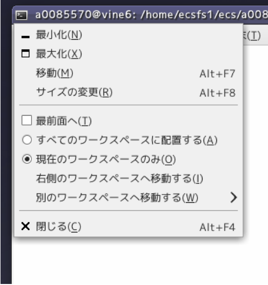
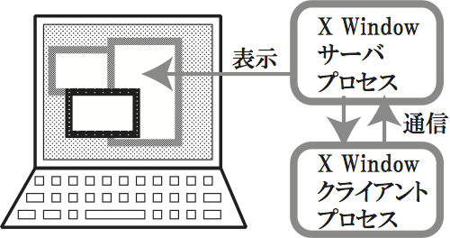
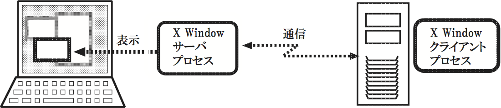

他のウインドウで完全に隠されたウインドウを見つけて、最前面に表示させる方法についてレポートにまとめなさい。
解説を参考にしながら実習を進めて下さい。
X Window のデスクトップ環境（GUI, 解説参照）として、現在のシステムではGNOMEと呼ばれるソフトウェアを用いています。GNOMEは多くの機能を持ちますが、ここではごく基本的な機能について説明します。
UNIX の特徴として、種々の設定が容易に変更できることが挙げられます。 X Window に関しても、システムを使いやすくする目的で設定が変更されることが頻繁に起きます。従って、画面表示が説明と多少異なっても気にせず、大づかみに機能を理解するようにして下さい。
画面内の各部分は以下のように呼ばれます(図2.1、2.2)。
図 2.1: デスクトップの各部分の名前
図 2.2: window の各部分の名前
図 2.3: windowの状態
ウィンドウの状態としては以下の用語を用います。
ウィンドウの基本操作
- アイコン化:
図 2.4: タスクバー内のアイコン
- ウィンドウの復元:
- アイコンの上にマウスカーソルを移動し、左ボタンをクリックすると、アイコンが消え、元のウィンドウが元の位置に現れます。このときのウィンドウは最前面に表示され、他のウィンドウと重なる場合はそれらを隠します。
- 大きさの変更:
- ボーダの上にマウスカーソルを移動させ、左ボタンでドラッグすると、ウィンドウのサイズが変ります。
- 位置の変更:
- タイトルバーをマウスの左ボタンでドラッグするとウィンドウを移動することができます。タイトルバー上で左ボタンを押した時点で、そのウィンドウは最前面に表示されます。
- 最前面に表示:
- 最前面に表示されていないウィンドウの上でマウスを左クリックすると、そのウィンドウが最前面に表示され、他のウィンドウを隠します。
ウィンドウのアプリケーションボタンを押すと、図 2. 5のようなメニュー画面が表示されます。ウィンドウの最大化、最小化、最前面表示、移動、サイズの変更などは、このメニューを選択して行なうことも出来ます。
図 2.5: メニューの画面
これは、文字列の切り貼りです。例えば、GNOME端末を2つ開いておき、片方の端末で実行したコマンドをもう一方の端末で実行するとき、キーボードから同じコマンドを入力するのが面倒なときなどに使います。
この機能は、異るクライアント間でも行えることがほとんどですが、漢字などの全角文字の貼り付けが行えないケースもありますので注意して下さい。
X Window は、現在のコンピュータでは常識となった、GUI(Graphical User Intrface)を実現するためのソフトウエアシステムです。このGUIによって、画面上にあたかも、紙がばらばらと置かれているかのような状態で、紙を読んだり、紙に書いたりといった操作が行え、直感的にも分かりやすい操作が行えます。この紙に相当するのが、ウィンドウであり、複数のウィンドウを操作できるGUIをマルチウィンドウシステムともいいます。
図 2.6: X window の構成
もともと、Unix は文字だけを表示する端末を想定して開発されていたため、マイクロソフトのWindowsのように、オペレーティングシステムそのものの中にマルチウィンドウ機能が組み込まれているわけではなく、X Window はオペレーティングシステムとは独立したソフトウエアとして開発されています。したがって、GUIを削除した状態でも、UNIXはきちんと動作するので、家電製品やロボットなどGUIを必要としない機器への組み込み用オペレーティングシステムとして利用することができます。
図 2.7: ネットワークを介したX window のりよう
また、図に示すようにX Window では表示を受け持つ「サーバ」が、個々のウインドウに対応する「クライアント」と通信を行って表示をするように設計されているため、例えば自分の使っているコンピュータに作図用のプログラムが 無くても、別のコンピュータ上の作図用クライアントを動作させれば、あたかも自分の使っているコンピュータ上で作図プログラムが動いているように使うことができます。このX Windowのサーバは Windows 上で動くものもあり、この機能を使えば Windows から UNIX のクライアントを動かすといったことも実現できます。
では、Xサーバが表示している個々のウィンドウを、移動させたり、手前に持ってきたり、サイズを変えたり、という操作はどのプロセスが行っているのでしょうか?これは、ウィンドウマネージャという特別なクライアントが、マウスの移動や、ボタンのクリックなどの「イベント」を見張っており、それに応じて個々のウィンドウの状態を変えているのです。
このように、オペレーティングシステムと独立に設計されたX Window システムは、ネットワークを介した利用ができることや、ウィンドウマネージャを入 れ換えたり、その動作を自分の好みに合わせて使うなどのことができるようになっており、非常に自由度が高いマルチウィンドウ環境を提供してくれます。
{kind=link}
{kind=link}
{kind=link}
{kind=link}
{kind=link}
{kind=link}
{kind=link}